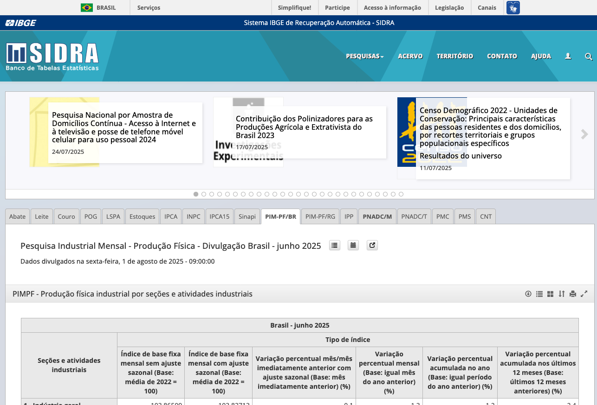
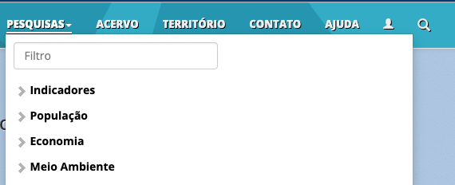
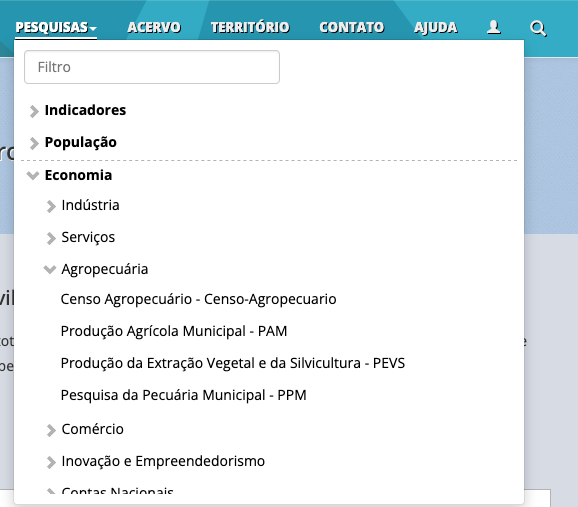
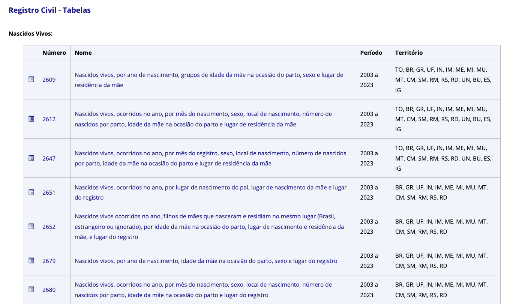

Obtendo dados do SIDRA/IBGE com R utilizando o pacote SIDRAR
Tutorial - 69ª RBras e ao 21º SEAGRO
Beatriz Milz
- Doutora em Ciência Ambiental no IEE/USP
- Atualmente: Estágio pós-doutoral na UFABC
- Co-organizadora da R-Ladies São Paulo
- Software peer review editor na rOpenSci
- GitHub Star

O que é o SIDRA?
Sistema IBGE de Recuperação Automática - SIDRA
“O Sistema IBGE de Recuperação Automática - SIDRA permite a consulta aos dados armazenados no Banco de Tabelas Estatísticas.”
Dados disponíveis: PESQUISAS


Organização em tabelas
Interface web
É possível consultar dados pela interface web:
Interface web
É possível fazer o download da tabela em formatos como .xlsx (Excel) e .ods (Open Document Spreadsheet):
O que é o {sidrar}?
Pacote {sidrar}
O pacote sidrar é uma ferramenta desenvolvida para facilitar o acesso aos dados do SIDRA/IBGE diretamente no R, permitindo consultas e extração de dados de forma programática.
O pacote está disponível no CRAN:
Introdução ao pacote {sidrar}
Carregar o pacote:
As funções do pacote dependem de uma conexão com a internet, pois acessam a API do SIDRA para obter os dados.
Recomendação: após obter os dados, é interessante salvá-los em um arquivo local para evitar consultas repetidas.
Funções do pacote {sidrar}
Funções disponíveis:
search_sidra(): Pesquisa tabelas disponíveis no SIDRA.info_sidra(): Obtém informações sobre uma tabela específica.get_sidra(): Extrai dados de uma tabela específica do SIDRA.
search_sidra()
A função search_sidra() permite pesquisar tabelas disponíveis no SIDRA, e descobrir o código da tabela que queremos consultar.
Obs: eu prefiro fazer essa busca no próprio site do SIDRA.
Exemplo de uso da função search_sidra()
[1] "Tabela 5435 - Pessoas de 14 anos ou mais de idade, ocupadas na semana de referência, por grupamento ocupacional no trabalho principal"
[2] "Tabela 5444 - Rendimento médio mensal real das pessoas de 14 anos ou mais de idade ocupadas na semana de referência com rendimento de trabalho, habitualmente e efetivamente recebidos no trabalho principal, por grupamento ocupacional no trabalho principal"
[3] "Tabela 9399 - Pessoas de 16 e 17 anos de idade classificadas na Proxy de Informalidade no trabalho principal e rendimento médio mensal real destas pessoas ocupadas na semana de referência com rendimento de trabalho, habitualmente recebido no trabalho principal, por grupamento ocupacional no trabalho principal - Estatísticas experimentais"
[4] "Tabela 9407 - Pessoas de 5 a 17 anos de idade em situação de trabalho infantil no trabalho principal, por grupo de idade e grupamento ocupacional no trabalho principal - Estatísticas experimentais"
[5] "Tabela 9440 - Pessoas de 14 anos ou mais de idade ocupadas na semana de referência, exclusive os empregados no setor público e militares, por grupamento ocupacional no trabalho principal e trabalho por meio de plataforma digital de serviço no trabalho principal - Estatísticas experimentais"
[6] "Tabela 9457 - Indicador 8.5.1 - Rendimento médio por hora real das pessoas de 15 anos ou mais de idade ocupadas na semana de referência com rendimento de trabalho, habitualmente recebido em todos os trabalhos, por grupamento ocupacional no trabalho principal"
[7] "Tabela 9485 - Percentual de pessoas de 14 anos ou mais de idade ocupadas na semana de referência, exclusive os empregados no setor público e militares, que trabalharam por meio de plataformas de serviços, por grupamento ocupacional no trabalho principal - Estatísticas experimentais"
[8] "Tabela 9504 - Pessoas de 5 a 17 anos de idade que realizam atividade econômica, por grupo de idade e grupamento ocupacional no trabalho principal - Estatísticas experimentais"
[9] "Tabela 9540 - Percentual de pessoas de 14 anos ou mais de idade ocupadas na semana de referência que realizaram teletrabalho no período de referência de 30 dias, por grupamento ocupacional no trabalho principal - Estatísticas experimentais"
[10] "Tabela 9572 - Percentual de pessoas de 14 anos ou mais de idade ocupadas na semana de referência que realizaram teletrabalho no domicílio no período de referência de 30 dias, por grupamento ocupacional no trabalho principal - Estatísticas experimentais"
[11] "Tabela 9575 - Pessoas de 14 anos ou mais de idade ocupadas na semana de referência que trabalharam no domicílio, por grupamento ocupacional no trabalho principal e frequência do trabalho no domicílio - Estatísticas experimentais"
[12] "Tabela 9599 - Pessoas de 14 anos ou mais de idade ocupadas na semana de referência, por grupamento ocupacional no trabalho principal e realização de teletrabalho fora do domicílio no período de referência de 30 dias - Estatísticas experimentais"
[13] "Tabela 9603 - Percentual de pessoas de 14 anos ou mais de idade ocupadas na semana de referência que realizaram teletrabalho fora do domicílio no período de referência de 30 dias, por grupamento ocupacional no trabalho principal - Estatísticas experimentais"
[14] "Tabela 9617 - Pessoas de 14 anos ou mais de idade ocupadas na semana de referência, por grupamento ocupacional no trabalho principal e realização de teletrabalho no período de referência de 30 dias - Estatísticas experimentais"
[15] "Tabela 9624 - Pessoas de 14 anos ou mais de idade ocupadas na semana de referência, por grupamento ocupacional no trabalho principal e realização de teletrabalho no domicílio no período de referência de 30 dias - Estatísticas experimentais" info_sidra()
A função info_sidra() fornece informações sobre uma tabela específica do SIDRA, incluindo descrição, variáveis disponíveis e outras metadados.
O resultado é um objeto do tipo lista. Recomendo salvar o resultado em uma variável para facilitar a consulta posterior.
Lembrete: podemos usar o operador $ para acessar os elementos da lista.
Exemplo de uso da função info_sidra()
Acessando informações da lista
Acessando informações da lista
[1] "201201, 201202, 201203, 201204, 201301, 201302, 201303, 201304, 201401, 201402, 201403, 201404, 201501, 201502, 201503, 201504, 201601, 201602, 201603, 201604, 201701, 201702, 201703, 201704, 201801, 201802, 201803, 201804, 201901, 201902, 201903, 201904, 202001, 202002, 202003, 202004, 202101, 202102, 202103, 202104, 202201, 202202, 202203, 202204, 202301, 202302, 202303, 202304, 202401, 202402, 202403, 202404, 202501"Acessando informações da lista
| cod | desc |
|---|---|
| Brazil | Brasil (1) |
| IRD | Região Integrada de Desenvolvimento até 2020 [1º trimestre 2012 a 1º trimestre 2020, 2º trimestre 2022 a 1º trimestre 2025] |
| Region | Grande Região (5) |
| State | Unidade da Federação (27) |
| City | Município [1º trimestre 2012 a 1º trimestre 2020, 2º trimestre 2022 a 1º trimestre 2025] |
| MetroRegion | Região Metropolitana até 2020 [1º trimestre 2012 a 1º trimestre 2020, 2º trimestre 2022 a 1º trimestre 2025] |
Acessando informações da lista
cod
1 1641
2 4087
3 4104
4 4105
desc
1 Pessoas de anos ou mais de idade (Mil pessoas)
2 Coeficiente de variação - Pessoas de anos ou mais de idade (%)
3 Distribuição percentual das pessoas de anos ou mais de idade (%)
4 Coeficiente de variação - Distribuição percentual das pessoas de anos ou mais de idade (%)Acessando informações da lista
get_sidra()
A função get_sidra() é utilizada para extrair dados de uma tabela específica do SIDRA. É possível especificar parâmetros como período, abrangência geográfica e variáveis desejadas.
Esses são os principais argumentos da função:
-
x: código da tabela do SIDRA (obrigatório). -
variable: vetor (do tipointeger) de códigos das variáveis a serem retornadas (padrão: todas, exceto “Total”). -
period: vetor (do tipocharacter) descrevendo o período dos dados (padrão: último disponível). -
geo: vetor (do tipocharacter) descrevendo os níveis geográficos dos dados (padrão: “Brasil”).
Exemplo de uso da função get_sidra()
Se indicarmos apenas o código da tabela, a função retorna dados sumarizados para o Brasil, com todas as variáveis disponíveis, para o último período disponível.
Exemplo dos dados retornados
Nível Territorial (Código) Nível Territorial Unidade de Medida (Código)
2 1 Brasil 1572
3 1 Brasil 1572
4 1 Brasil 1572
5 1 Brasil 1572
6 1 Brasil 1572
7 1 Brasil 2
8 1 Brasil 2
9 1 Brasil 2
10 1 Brasil 2
11 1 Brasil 2
12 1 Brasil 2
13 1 Brasil 2
14 1 Brasil 2
15 1 Brasil 2
16 1 Brasil 2
17 1 Brasil 2
18 1 Brasil 2
19 1 Brasil 2
20 1 Brasil 2
21 1 Brasil 2
Unidade de Medida Valor Brasil (Código) Brasil Trimestre (Código)
2 Mil pessoas 177172.0 1 Brasil 202501
3 Mil pessoas 110197.0 1 Brasil 202501
4 Mil pessoas 102483.0 1 Brasil 202501
5 Mil pessoas 7714.0 1 Brasil 202501
6 Mil pessoas 66975.0 1 Brasil 202501
7 % 0.0 1 Brasil 202501
8 % 0.2 1 Brasil 202501
9 % 0.2 1 Brasil 202501
10 % 1.3 1 Brasil 202501
11 % 0.3 1 Brasil 202501
12 % 100.0 1 Brasil 202501
13 % 62.2 1 Brasil 202501
14 % 57.8 1 Brasil 202501
15 % 4.4 1 Brasil 202501
16 % 37.8 1 Brasil 202501
17 % NA 1 Brasil 202501
18 % 0.2 1 Brasil 202501
19 % 0.2 1 Brasil 202501
20 % 1.3 1 Brasil 202501
21 % 0.3 1 Brasil 202501
Trimestre Variável (Código)
2 1º trimestre 2025 1641
3 1º trimestre 2025 1641
4 1º trimestre 2025 1641
5 1º trimestre 2025 1641
6 1º trimestre 2025 1641
7 1º trimestre 2025 4087
8 1º trimestre 2025 4087
9 1º trimestre 2025 4087
10 1º trimestre 2025 4087
11 1º trimestre 2025 4087
12 1º trimestre 2025 4104
13 1º trimestre 2025 4104
14 1º trimestre 2025 4104
15 1º trimestre 2025 4104
16 1º trimestre 2025 4104
17 1º trimestre 2025 4105
18 1º trimestre 2025 4105
19 1º trimestre 2025 4105
20 1º trimestre 2025 4105
21 1º trimestre 2025 4105
Variável
2 Pessoas de 14 anos ou mais de idade
3 Pessoas de 14 anos ou mais de idade
4 Pessoas de 14 anos ou mais de idade
5 Pessoas de 14 anos ou mais de idade
6 Pessoas de 14 anos ou mais de idade
7 Coeficiente de variação - Pessoas de 14 anos ou mais de idade
8 Coeficiente de variação - Pessoas de 14 anos ou mais de idade
9 Coeficiente de variação - Pessoas de 14 anos ou mais de idade
10 Coeficiente de variação - Pessoas de 14 anos ou mais de idade
11 Coeficiente de variação - Pessoas de 14 anos ou mais de idade
12 Distribuição percentual das pessoas de 14 anos ou mais de idade
13 Distribuição percentual das pessoas de 14 anos ou mais de idade
14 Distribuição percentual das pessoas de 14 anos ou mais de idade
15 Distribuição percentual das pessoas de 14 anos ou mais de idade
16 Distribuição percentual das pessoas de 14 anos ou mais de idade
17 Coeficiente de variação - Distribuição percentual das pessoas de 14 anos ou mais de idade
18 Coeficiente de variação - Distribuição percentual das pessoas de 14 anos ou mais de idade
19 Coeficiente de variação - Distribuição percentual das pessoas de 14 anos ou mais de idade
20 Coeficiente de variação - Distribuição percentual das pessoas de 14 anos ou mais de idade
21 Coeficiente de variação - Distribuição percentual das pessoas de 14 anos ou mais de idade
Condição em relação à força de trabalho e condição de ocupação (Código)
2 32385
3 32386
4 32387
5 32446
6 32447
7 32385
8 32386
9 32387
10 32446
11 32447
12 32385
13 32386
14 32387
15 32446
16 32447
17 32385
18 32386
19 32387
20 32446
21 32447
Condição em relação à força de trabalho e condição de ocupação
2 Total
3 Força de trabalho
4 Força de trabalho - ocupada
5 Força de trabalho - desocupada
6 Fora da força de trabalho
7 Total
8 Força de trabalho
9 Força de trabalho - ocupada
10 Força de trabalho - desocupada
11 Fora da força de trabalho
12 Total
13 Força de trabalho
14 Força de trabalho - ocupada
15 Força de trabalho - desocupada
16 Fora da força de trabalho
17 Total
18 Força de trabalho
19 Força de trabalho - ocupada
20 Força de trabalho - desocupada
21 Fora da força de trabalhoConclusão
Materiais
- Material do curso “Introdução à análise de dados no R”: Importação, transformação
Contato
Obrigada!
beamilz.com > talks and teaching > obtendo dados do SIDRA/IBGE com R utilizando o pacote SIDRAR